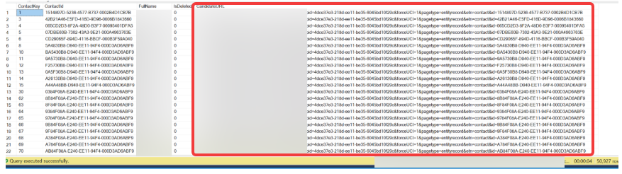

Context
We had an overarching requirement to improve the performance of our model and reports. One area identified that could potentially be optimised was around GUIDs. We ingested a number of different GUID columns into Power BI and there was doubt as to whether all of them served a purpose.
So an investigation was initiated to understand their purpose and to determine if they could be safely removed from Power BI, thereby making the model and downstream queries leaner and more efficient
The following is a write-up of the investigation:
1. Problem
While looking generally at the area of performance improvements for our model and reports, it was mentioned that we take a number of GUID columns into Power BI.
This item was to consider this and to understand why these are taken into Power BI (with the main suspect being in order to create Core URLs) and whether that reasoning could be abstracted away into the SQL database. If not, could we amend the data types for these columns in order to reduce the storage size.
2. Outcome
Using Measure Killer, I identified three main uses of these GUIDs once they are in the Power BI model:
- They are mainly used in DAX measures to create dynamic URLs in the drillthrough tables. These URLs navigate the user from Power BI to the specific record in the core system.
- A number of them have a secondary use in these drillthrough tables as a hidden column in the table. This is in order to ensure the tables display the correct subset of data and by adding a unique identifier in this way, this achieves that.
- Some of them are used in relationships. For example, DimClient and DimClientContact are related using ClientId which is a GUID.
In addition, Power BI does not have the GUID data type like SQL and so these values are represented as text. Given the high cardinality of GUIDs, retaining them in the model can therefore have a meaningful storage impact.
3. Proposed Next Steps
Because these URLs are used for different purposes, it's not quite as simple as removing all the GUID columns from Power BI. However I think there is scope to make in-roads here. I would propose the following next steps:
- Identify all GUIDs that are only used for the creation of URLs.
- Identify all GUIDs that are also used as hidden columns or filters in drillthrough tables.
- Spike to see if this functionality / output can be achieved without using these GUIDs.
- If they can be replaced in this manner, it will result in additional dev and test.
- The two identification exercises above will give us the scope of all GUIDs that could be removed from Power BI.
- Can then, in theory, do the necessary dev to refactor the method for creating URLs:
- SQL dev to add all the URLs into SQL views.
- Power BI dev to hook up the existing measures to use these new URL columns in the views.
3.1 Can the URLs be created in SQL?
Yes this can be done. Because they are dynamic URLs it requires a little bit of work.
The base URL is stored in a table in the SQL data warehouse. It can therefore be easily accessed in the definitions of each of the views.
The middle part of the URLs is static data (stating which entity to navigate to) with the end part being the GUID which already exists in the view.
It would be straightforward to create a derived column which is the concatenation of these 3 parts.
As a proof of concept, the following is a screenshot showing an abridged version of a SQL view with a new URL column:

3.2 If they must stay in Power BI
This section assumes that we have to keep some GUID columns in Power BI.
If that is the case, there is scope to replace them with integer type columns either in the SQL view or in Power Query.
The rationale behind doing this conversion is that, in the two scenarios above, the GUIDs are not being used for their GUID characteristics. What is important is their uniqueness per row.
This uniqueness requirement could potentially be covered with an integer column instead. This would at least then reduce their size in Power BI and therefore the overall storage size. This would need to be validated through a further spike and regression testing.
4. Summary
The investigation identified that the GUIDs could not simply be removed as a single optimisation exercise, because they served three distinct purposes within the Power BI model.
Their downstream uses needed to be understood in more detail before the scope of any changes could be established safely.
What Happened Next?
A further spike was raised to identify the different uses of the GUID columns and establish the scope of the changes required.
The SQL proof of concept confirmed that URL generation could be moved upstream, but the wider optimisation still required further investigation before implementation.